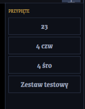

Pierwsze kroki
Instalacja
Wymagania systemowe: Windows 10 lub 11 (64-bit). Drugi monitor lub projektor jest opcjonalny — program działa i bez niego. Żadnych dodatkowych zależności: instalator jest samodzielny.
- Pobierz plik
CantioSetup-x.y.z.exez Github Releases. - Uruchom instalator i zatwierdź monit UAC (Kontrola konta użytkownika).
- Przejdź przez kreatora. Na ekranie wyboru bazy danych zdecyduj: przykładowa (z gotowymi pieśniami — zalecane) lub pusta.
- Po instalacji kliknij "Uruchom Cantio" — program uruchomi się od razu.
Kopia zapasowa: Wszystkie Twoje pieśni i zestawy przechowywane są w pliku %LocalAppData%\Cantio\cantio.db. Plik nie jest usuwany przy reinstalacji ani odinstalowaniu. Kopia zapasowa = skopiuj ten jeden plik.
Pierwsze uruchomienie

Okno Cantio ma 3 zakładki u góry:
- WYŚWIETLANIE — główny widok sterowania podczas nabożeństwa: wybór pieśni, slajdy, zestaw
- USTAWIENIA — ekran projekcji, język, import pieśni, tagi formatowania, skróty
- WYGLĄD — czcionka, kolory, tło, gradient, obraz tła
Przed pierwszym użyciem z projektorem:
- Przejdź do zakładki USTAWIENIA.
- W kolumnie "Ekran projekcji" zaznacz swój projektor lub drugi monitor.
- Kliknij ZAPISZ USTAWIENIA.
- Wróć do zakładki WYŚWIETLANIE — wybierz kategorię, kliknij pieśń, kliknij zwrotkę w lewej kolumnie. Tekst pojawi się na projektorze.
Okno programu zapamiętuje swoją pozycję i rozmiar między sesjami. Jeśli zmienisz konfigurację monitorów i okno "zniknie", program automatycznie przeniesie je na ekran główny przy następnym uruchomieniu.
Wyświetlanie
Zakładka WYŚWIETLANIE to główne centrum sterowania. Ma trzy kolumny:
- Lista slajdów załadowanej pieśni
- Nawigacja ◄ ►
- Przycisk WYGAŚ
- ComboBox kategorii
- Pole wyszukiwania
- Lista pieśni
- Podgląd projektora
- Przypięte zestawy
- Zestaw nabożeństwa
- Pole nazwy + grupy
- Przyciski ZAPISZ / PRZYPNIJ
Kolumna ZWROTKI — slajdy pieśni
Lewa kolumna wyświetla slajdy aktualnie załadowanej pieśni. Każdy slajd to zwrotka lub jej fragment — długie zwrotki są automatycznie dzielone na kilka slajdów tak, żeby tekst mieścił się na ekranie projekcji.
Etykiety slajdów:
- 1 / 2 / 3… — zwrotka (numer porządkowy)
- R / R2 — refren
- B / B2 — bridge
Złoty lewy pasek przy slajdzie wskazuje, co aktualnie wyświetla projektor.
Na dole kolumny znajdują się:
- Przyciski ◄ i ► — poprzedni i następny slajd
- Przycisk WYGAŚ / POKAŻ — patrz sekcja Wygaszanie ekranu
Podział długich zwrotek: Program dzieli tekst według kolejności: Enter (nowy akapit) → . → , → ; → : → spacja. Jeśli zwrotka dzieli się w nieodpowiednim miejscu, edytuj ją i wstaw dodatkowe puste linie tam, gdzie chcesz podziału slajdów.
Kolumna środkowa — wybór pieśni
Środkowa kolumna ma dwie części:
Górna część — wybór pieśni:
- Lista rozwijana kategorii — wybierz kategorię (Adwent, Wielkanoc, Pieśni maryjne…)
- Pole wyszukiwania — wpisz fragment tytułu, lista filtruje się w czasie rzeczywistym; naciśnij ↓ z pola wyszukiwania, żeby przejść fokusem na listę
- Lista pieśni — kliknij pieśń, żeby załadować jej slajdy do kolumny ZWROTKI
Dolna część — podgląd i szybki dostęp:
- Miniatura podglądu projektora na żywo — widzisz dokładnie to, co wyświetla się wiernym
- Przyciski przypiętych zestawów (do 4) — szybkie załadowanie najczęściej używanych zestawów
Kolumna LISTA — zestaw nabożeństwa
Prawa kolumna to zestaw nabożeństwa — lista pieśni w kolejności wykonania.
Dodawanie pieśni: zaznacz pieśń w środkowej kolumnie → kliknij DODAJ DO KOLEJNOŚCI.
Praca z zestawem:
- Ikona 👁 przy pieśni → załaduj tę pieśń do wyświetlania i od razu projicuj
- Zmiana kolejności: drag & drop lub przyciski ⏫ 🔼 🔽 ⏬
- Przycisk ✕ → usuń pieśń z zestawu
- Strzałki ↑ ↓ na klawiaturze → przełącz między pieśniami w zestawie

Zapisywanie zestawu:
- Wpisz nazwę zestawu w polu "Nazwa zestawu" (opcjonalnie: wpisz grupę w polu obok)
- Kliknij ZAPISZ ZESTAW lub naciśnij Ctrl+S
- Jeśli zestaw o tej nazwie już istnieje: pojawi się pytanie Nadpisz / Nowy / Anuluj
- Pusty tytuł → program automatycznie nada nazwę z datą i godziną
Wyszukiwarka zestawów
Kliknij przycisk ⊞ Otwórz w dolnej części kolumny LISTA, żeby otworzyć popup wyszukiwarki zapisanych zestawów.
- Wpisz fragment nazwy → lista filtruje się w czasie rzeczywistym
- Otwórz → zastąp bieżący zestaw wybranym
- Dołącz → dodaj pieśni z wybranego zestawu na koniec bieżącego (przydatne przy nabożeństwach z kilku części)
- Kliknij poza popup → zamknij bez zmian
Możesz też filtrować zestawy po grupach (np. "Niedziela", "Ślub") — przyciski grup widoczne nad listą w popupie.
Edycja inline
Kliknij ikonę ✎ przy pieśni w zestawie, żeby otworzyć panel szybkiej edycji bezpośrednio w zakładce WYŚWIETLANIE — bez zmiany widoku.
W panelu możesz:
- Edytować tekst każdej zwrotki
- Zmieniać kolejność zwrotek
Po zakończeniu Ctrl+S zapisuje zmiany, a slajdy przebudowują się automatycznie. Przycisk ← Wróć anuluje edycję.

Wygaszanie ekranu
Kliknij przycisk WYGAŚ (lub naciśnij klawisz Esc domyślnie) — projektor pokazuje czarny ekran.
- Podgląd operatora w oknie programu pozostaje widoczny — wiesz, co wyświetlisz po przywróceniu
- Ponowne naciśnięcie Esc lub kliknięcie POKAŻ przywraca ostatnio wyświetlany slajd
Psalm mode i wygaszanie: W trybie psalm wygaszenie działa tak samo — podgląd operatora pokazuje aktualną zwrotkę, projektor wraca do refrenu po przywróceniu.
Edycja pieśni
Tworzenie i edycja pieśni

Edytor pieśni jest dostępny z zakładki WYŚWIETLANIE: zaznacz pieśń z listy i kliknij EDYTUJ — panel edytora nakrywa środkową kolumnę.
Zarządzanie kategoriami (górna część panelu edytora):
- Wpisz nazwę w polu "Nazwa kategorii…" → kliknij + KATEGORIA — dodaje nową kategorię
- Kliknij nazwę istniejącej kategorii → pojawią się pola edycji: nazwa, numer porządkowy, przyciski ✓ (zapisz), ✕ (anuluj), 🗑 (usuń)
- Usunięcie kategorii nie usuwa pieśni — pozostają bez kategorii
Edycja pieśni:
- Kliknij NOWA PIEŚŃ lub zaznacz istniejącą
- Pola: Tytuł (wymagany), Numer (np. numer ze śpiewnika), Kategoria
- Czerwona gwiazdka ★ przy tytule = niezapisane zmiany
- Ctrl+S zapisuje pieśń i przebudowuje slajdy
- Przycisk ← WRÓĆ = porzuć zmiany i wróć do widoku
- Przycisk USUŃ = usuń pieśń po potwierdzeniu
Typy zwrotek
W edytorze możesz dodawać i zarządzać zwrotkami:
- + Zwrotka / + Refren / + Bridge — dodaje nową zwrotkę odpowiedniego typu
- Kliknij etykietę zwrotki (np. "1", "R", "B") → zmienia typ cyklicznie: Zwrotka → Refren → Bridge → Zwrotka
- ✕ przy zwrotce → usuwa (z potwierdzeniem, jeśli niepusta)
- Drag & drop lub przyciski ↑ ↓ → zmiana kolejności
Wklejanie całego tekstu pieśni
Zamiast dodawać zwrotki jedna po jednej, możesz wkleić cały tekst naraz:
- Kliknij ✎ Edytuj całość w edytorze pieśni.
- W popupie wklej cały tekst pieśni — zwrotki oddzielone pustą linią.
- Jeśli linia zaczyna się od
Refren:→ program rozpoznaje ją jako refren. - Kliknij Zatwierdź — program automatycznie buduje zwrotki i kolejność wykonania.
Dla psalmów: zaznacz checkbox "Psalm — nie wstawiaj refrenu automatycznie" przed zatwierdzeniem. Program zachowa kolejność dokładnie tak jak wklejono — bez automatycznego wstawiania refrenu po każdej zwrotce.
Automatyczny refren
Gdy pieśń ma oznaczony refren, Cantio wstawia go automatycznie po każdej zwrotce podczas wyświetlania — bez żadnych zmian w bazie danych.
Kolejność wykonania budowana przy ładowaniu pieśni: R → Z1 → R → Z2 → R → Z3…
Dla pieśni z własnym układem lub psalmów: użyj checkboxu "Psalm" w popupie Edytuj całość — program zachowuje wtedy kolejność zwrotek dokładnie tak jak wklejono.

Formatowanie tekstu
W tekście zwrotek możesz używać tagów formatowania:
{b}tekst{/b}— pogrubienie{i}tekst{/i}— kursywa{u}tekst{/u}— podkreślenie- Własne tagi kolorów: np.
{z}Alleluja{/z}wyświetli "Alleluja" w złotym kolorze
Skrót klawiszowy w edytorze: zaznacz fragment tekstu → naciśnij Ctrl+klawisz przypisany do tagu → program owinie zaznaczenie tagami automatycznie.
Własne tagi kolorów definiujesz w zakładce USTAWIENIA → Tagi formatowania.
Zestawy nabożeństw
Zarządzanie zestawem

Zestawy to zapisane kolejności pieśni na nabożeństwo. Zarządzasz nimi z kolumny LISTA w zakładce WYŚWIETLANIE:
- Zapis: wpisz nazwę → ZAPISZ ZESTAW (lub Ctrl+S). Jeśli zestaw istnieje: pytanie Nadpisz / Nowy / Anuluj.
- Otwarcie: kliknij ⊞ Otwórz → wyszukaj po nazwie → "Otwórz" zastąpi bieżący, "Dołącz" doda pieśni na koniec.
- Pusty tytuł: automatyczna nazwa z datą i godziną.
Grupy i przypinanie
Grupy pozwalają organizować zestawy (np. "Niedziela", "Ślub", "Adwent"). Kliknij przycisk aby zarządzać grupami. Aby przypisać zestaw do grupy, wybierz nazwę grupy w polu nad nazwą zestawu przed zapisem.
Przypinanie zestawu daje szybki dostęp:
- Kliknij PRZYPNIJ w kolumnie LISTA — zestaw zostaje oznaczony
- Przypięte zestawy (do 4) widoczne są jako szybkie przyciski w dolnej części środkowej kolumny
- Kliknij przycisk z nazwą zestawu → załaduj natychmiast
- ODEPNIJ — usuwa przypięcie

Ustawienia

Zakładka USTAWIENIA zawiera 4 kolumny: ogólne / tagi formatowania / import pieśni / log importu. Przycisk ZAPISZ USTAWIENIA zatwierdza wszystkie kolumny naraz.
Ogólne
- "Ładuj ostatnio otwarty zestaw przy starcie" — program zapamiętuje ostatni załadowany zestaw i przywraca go automatycznie przy każdym uruchomieniu
- "Automatyczne dopasowanie rozmiaru czcionki" — rozmiar czcionki powiększa się, żeby tekst zajął jak najwięcej miejsca na ekranie projekcji. Rozmiar ustawiony w zakładce WYGLĄD staje się minimum
Ekran projekcji
Lista wszystkich podłączonych monitorów (np. "Ekran 2 · 1920×1080"). Zaznacz monitor, na którym ma wyświetlać się tekst pieśni, i kliknij ZAPISZ USTAWIENIA.
Jeśli projektor nie pojawia się na liście: podłącz go, a następnie kliknij Odśwież lub zamknij i otwórz zakładkę USTAWIENIA.
Język interfejsu
Wybierz język przycisków radiowych: Polski / English / Español. Zmiana jest natychmiastowa — cały interfejs przełącza się bez restartu programu.
Tagi formatowania
Definiujesz tu własne tagi kolorów i stylów dla tekstu zwrotek:
- Kliknij + → podaj nazwę tagu (np.
z), wybierz kolor lub zaznacz Pogrubienie / Kursywa / Podkreślenie, opcjonalnie przypisz klawisz skrótu - Tagu używasz w tekście:
{z}słowo{/z} - Wbudowane tagi (zawsze dostępne):
{b}pogrubienie,{i}kursywa,{u}podkreślenie
Skróty formatowania: Przypisz klawisz do tagu (np. klawisz Z) → w edytorze zaznacz tekst → Ctrl+Z owinie go tagami {z}…{/z} automatycznie.
Tryb psalm
Tryb psalm przeznaczony jest do psalmów responsoryjnych: projektor przez cały czas wyświetla refren, a organista/kantor widzi w podglądzie aktualną zwrotkę.
Konfiguracja:
- W USTAWIENIA → Ogólne → "Kategoria psalmu responsoryjnego" wybierz kategorię z listy.
- Kliknij ZAPISZ USTAWIENIA.
Działanie:
- Załaduj pieśń z wybranej kategorii → tryb psalm włącza się automatycznie
- Projektor: wyświetla tylko refreny (R). Nawigacja operatora nie zmienia obrazu projekcji
- Podgląd operatora: pokazuje aktualnie wybraną zwrotkę — kantor widzi, co czyta
- Kliknij slajd refrenu (R) → projektor aktualizuje wyświetlany refren
- Załaduj pieśń z innej kategorii → tryb psalm wyłącza się automatycznie

Wygląd

Zakładka WYGLĄD zawiera trzy kolumny: czcionka | kolory i tło | podgląd na żywo. Każda zmiana widoczna jest natychmiast w podglądzie po prawej. Kliknij ZAPISZ WYGLĄD, żeby zatwierdzić.
Czcionka
- Rodzina czcionki — lista czcionek zainstalowanych w systemie
- Rozmiar — suwak (piksele). Gdy włączone Automatyczne dopasowanie (USTAWIENIA → Ogólne), ta wartość staje się minimum
- Pogrubienie — checkbox
- Wyrównanie poziome: Wyśrodkuj / Lewo / Prawo
- Odstęp między wierszami — mnożnik (np. 1.35 = 35% więcej miejsca między liniami)
- Marginesy — poziome i pionowe (piksele); tekst odsunięty od krawędzi ekranu
- Wyrównanie pionowe: Góra / Środek / Dół
Kolory i tło
Kolor tekstu:
- Picker kolorów + szybkie presety (biały, kremowy, złoty, niebieski…)
Cień tekstu:
- Włącz / wyłącz — checkbox
- Rozmycie, głębokość, przezroczystość cienia
Kolor tła:
- Picker + presety (czarny, granatowy, ciemnoczerwony…)
Gradient tła:
- Włącz / wyłącz — checkbox
- Typ: Liniowy / Radialny
- Kolor 1 i Kolor 2 — pickery
- Kąt gradientu (0–360°)
Obraz tła:
- Kliknij PRZEGLĄDAJ → wskaż plik JPG, PNG lub BMP
- Suwak krycia (0–100%) — reguluje jak bardzo obraz przebija przez kolor/gradient tła
- Kliknij ✕ → usuń obraz tła
Łączenie efektów: Obraz tła łączy się z kolorem i gradientem. Ustaw ciemny kolor tła + niskie krycie obrazu = subtelna faktura, czytelny tekst.
Skróty klawiaturowe
Domyślne skróty nawigacji (konfigurowalne w USTAWIENIA):
| Klawisz | Akcja |
|---|---|
| → | Następny slajd |
| ← | Poprzedni slajd |
| Spacja | Następny slajd (stały alias dla pilotów) |
| ↓ | Następna pieśń w zestawie |
| ↑ | Poprzednia pieśń w zestawie |
| Home | Pierwszy slajd pieśni |
| Esc | Wygaś / pokaż ekran |
| Ctrl+F | Otwórz wyszukiwanie pieśni |
| Ctrl+S | Zapisz (zależnie od aktywnej zakładki) |
| Alt+F4 | Zamknij program |
| F1 | Otwórz okno skrótów klawiaturowych |

Ważne: Skróty nawigacji projekcji (slajdy, wygaś) działają niezależnie od tego, który element ma fokus w oknie. Blokuje je tylko aktywne pole tekstowe (podczas edycji pieśni). Klawiatura zawsze steruje projektorem.
Konfiguracja skrótów
Otwórz okno konfiguracji skrótów: F1 lub przycisk SKRÓTY KLAWIATUROWE w zakładce USTAWIENIA.
- Kliknij pole przy akcji → naciśnij klawisz → wyświetla się nazwa (np. "Ctrl+F", "PageDown")
- Wyczyść skrót: naciśnij Esc, Backspace lub Delete w polu skrótu
- Litery A–Z automatycznie dostają prefiks Ctrl+
- Klawisze F1–F12, strzałki, PageUp/PageDown mogą działać bez modyfikatora
- Przywróć domyślne — reset wszystkich skrótów do ustawień fabrycznych
- Ctrl+S lub przycisk ZAPISZ — zatwierdza konfigurację
Pilot prezentacyjny: Przypisz PageDown do "Następny slajd" i PageUp do "Poprzedni slajd" — pilot będzie sterował Cantio jak każda inna prezentacja. Spacja jest zawsze aktywna jako alias "Następny slajd" (nie można jej wyłączyć).
Import pieśni
Import dostępny jest z zakładki USTAWIENIA (trzecia kolumna). Log importu wyświetla się na bieżąco w czwartej kolumnie.
Obsługiwane formaty
Kroki importu pieśni:
- Wybierz format z listy (OpenLP SQLite / OpenLP XML / OpenSong Folder / OpenSong XML).
- Kliknij PRZEGLĄDAJ — wskaż plik lub katalog.
- Zaznacz opcje: "Importuj kategorie" (tworzy brakujące kategorie) i/lub "Nadpisuj istniejące" (zastępuje pieśni po tytule).
- Kliknij PODGLĄD — zobaczysz podsumowanie przed importem.
- Kliknij IMPORTUJ — pasek postępu + log w czasie rzeczywistym.
Znaczniki w logu: ✓ zielony = sukces; ✗ czerwony = błąd; • szary = pominięto (duplikat).
Import zestawów .osz
Plik .osz to format zestawów nabożeństwa z OpenLP — archiwum ZIP zawierające pieśni i kolejność. Cantio importuje je jako gotowe zestawy.
- W zakładce USTAWIENIA przewiń do sekcji Import zestawów OSZ.
- Wybierz grupę docelową (np. "Niedziela") lub pozostaw "bez grupy".
- Kliknij IMPORTUJ OSZ → wybierz jeden lub kilka plików
.osz. - Zestawy pojawią się natychmiast w wyszukiwarce zestawów (popup ⊞ Otwórz).
Import .osz zawiera też pieśni (jeśli nie ma ich jeszcze w bazie). Pieśni z zestawu zostaną dodane do Twojej bazy automatycznie.
Wskazówki i porady
-
Pilot zdalny
Przypisz PageDown do "Następny slajd" i PageUp do "Poprzedni slajd" w oknie skrótów. Pilot prezentacyjny od razu działa z Cantio. -
Automatyczne ładowanie zestawu
Włącz "Ładuj ostatnio otwarty zestaw przy starcie" w USTAWIENIA. Program przywróci porządek pieśni automatycznie — nie tracisz czasu na początku nabożeństwa. -
Przypięte zestawy dla każdej niszy
Przypnij stałe zestawy (np. "Niedziela zwykła", "Adwent", "Ślub") — widoczne jako szybkie przyciski w środkowej kolumnie WYŚWIETLANIA. Zmiana zestawu jednym kliknięciem. -
Kopia zapasowa danych
Skopiuj plik%LocalAppData%\Cantio\cantio.dbprzed aktualizacją lub na inny komputer. Ten jeden plik zawiera wszystkie Twoje pieśni, zestawy i ustawienia. -
Estetyczny podział slajdów
Program dzieli zwrotki preferując Enter → . → , → ; → : → spacja. Jeśli podział wygląda nieestetycznie, edytuj zwrotkę i wstaw Enter dokładnie tam, gdzie chcesz cięcia slajdu. -
Wklejanie całego tekstu pieśni
Zamiast ręcznie dodawać zwrotki, wklej cały tekst naraz w "Edytuj całość" — zwrotki oddziel pustą linią, refren poprzedź linią "Refren:". Cantio automatycznie podzieli i ułoży kolejność. -
Praca bez projektora
Cantio działa normalnie nawet bez podłączonego projektora. Okno projekcji pojawia się wtedy na ekranie głównym — przydatne do przygotowywania zestawów z dala od kościoła. -
Wielojęzyczny interfejs
W USTAWIENIA wybierz język interfejsu (Polski / English / Español) — zmiana natychmiastowa, bez restartu. Przydatne przy pracy z wolontariuszami mówiącymi różnymi językami.